VOllSK FIRST EXHIBITION
-THE FACE-
2026.08.01 — 08.02MOCHIDA KOZO × TAKEMURA SOICHIRO
人は顔を見て、表情を読んで、その人の内側を想像する。面は、内側と外側を隔てる境界でありながら、両者を繋ぐ唯一の手段でもある。
見せることと隠すこと。判断することと、判断されること。素顔と仮面のあいだにあるその領域を、本展では作品を通して探る。
絵画、写真、映像に現れる「面」の姿から、私たちが人を、そして自分自身を見る方法を見つめ直す。VOllSK first exhibition「-面- -THE FACE-」。
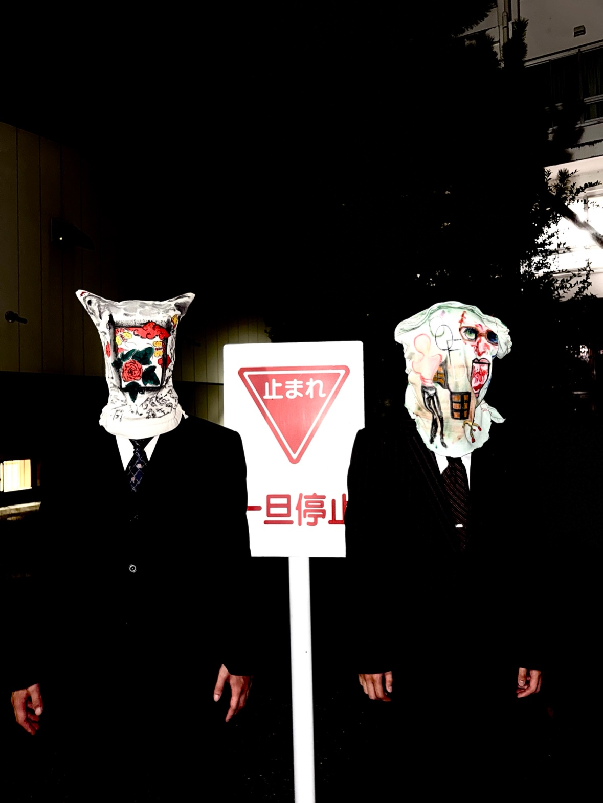
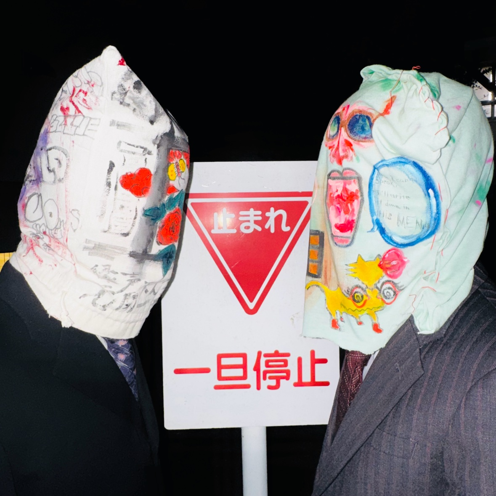
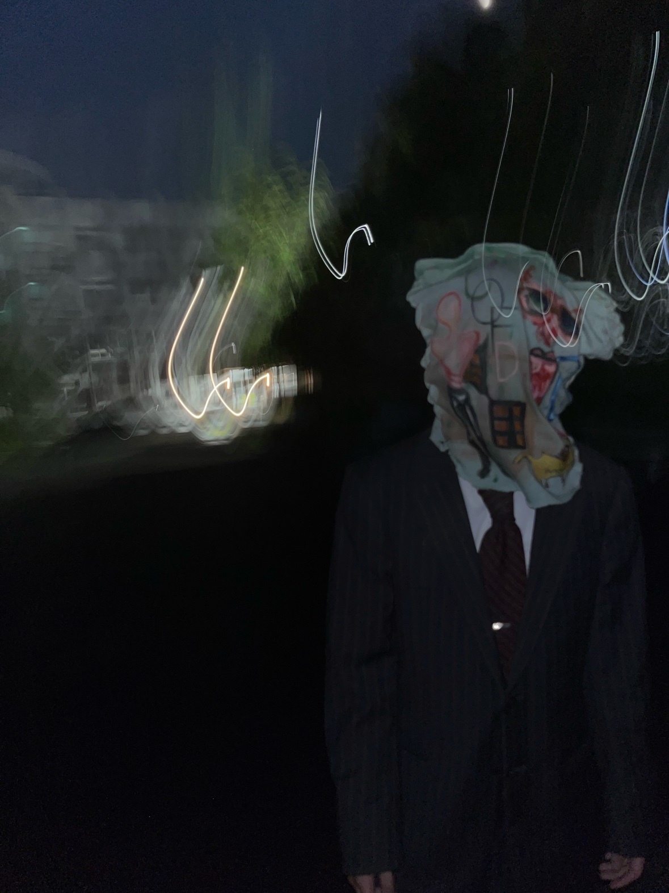
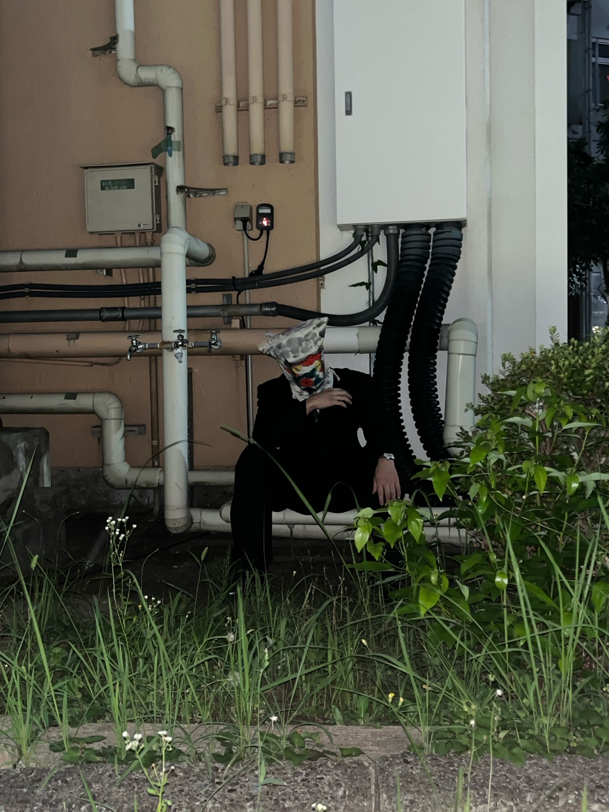
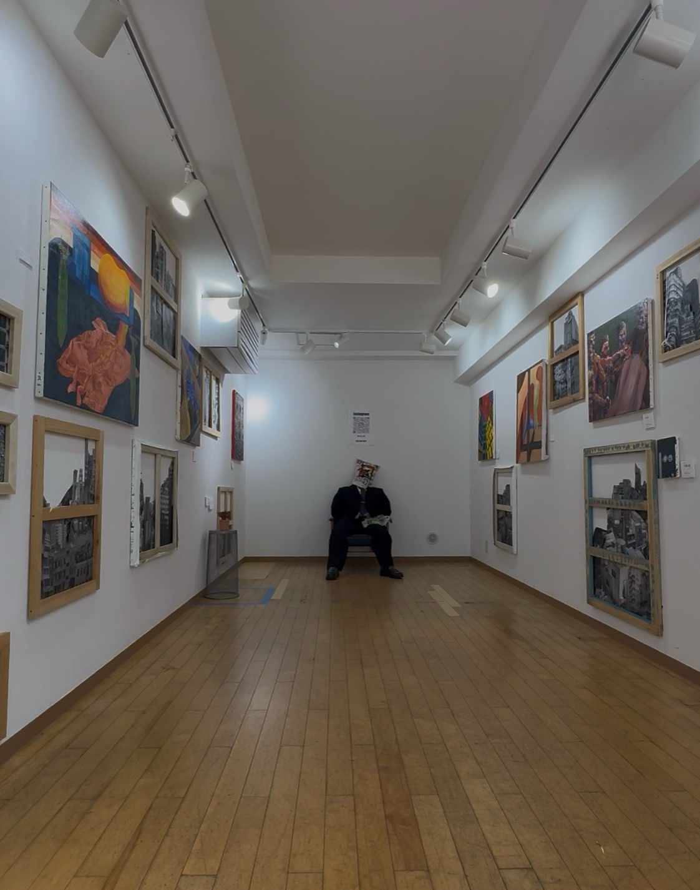
展示当日のギャラリーでは、キャンバスの木枠を窓に見立てたコラージュ作品によるインスタレーションが展開された。窓の向こうを覗くように作品と向き合うその体験は、内側と外側を隔てながら、同時に両者を繋ぐ「面」のテーマとも重なっていた。
WORKS
EXHIBITED WORKS
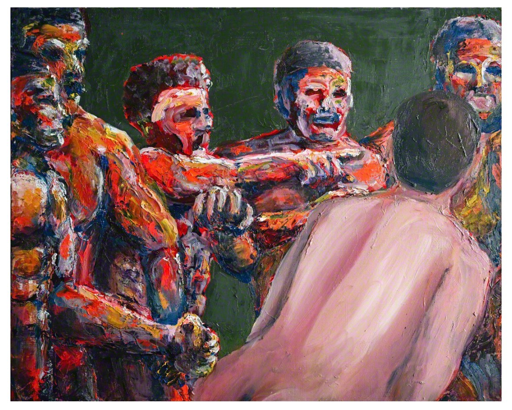
TAKEMURA SOICHIRO
530 × 652 mm / oil on canvas / 2026
VOllSK First exhibition 『面』
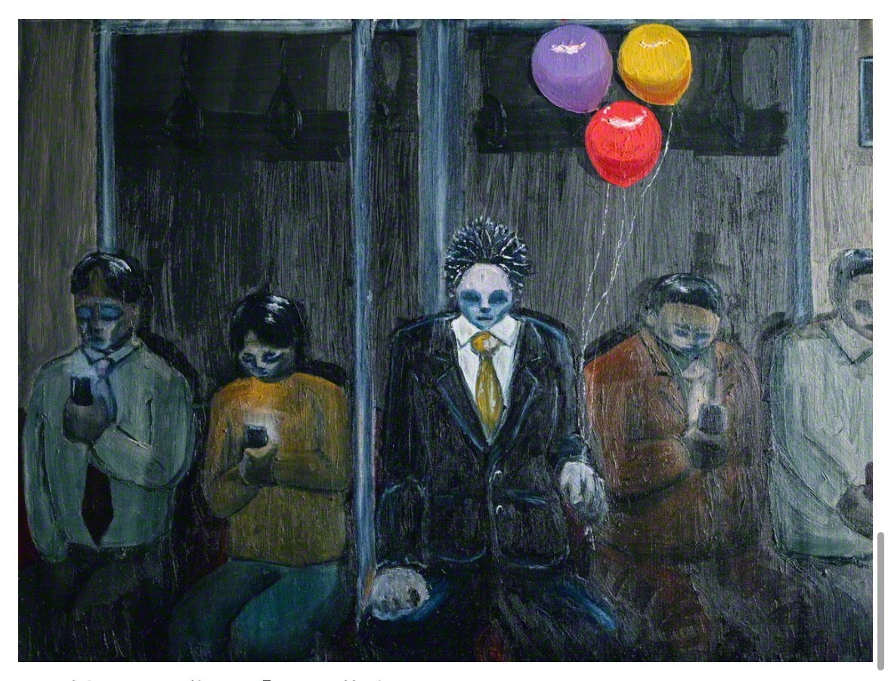
TAKEMURA SOICHIRO
606 × 803 mm / oil on canvas / 2026
VOllSK First exhibition 『面』
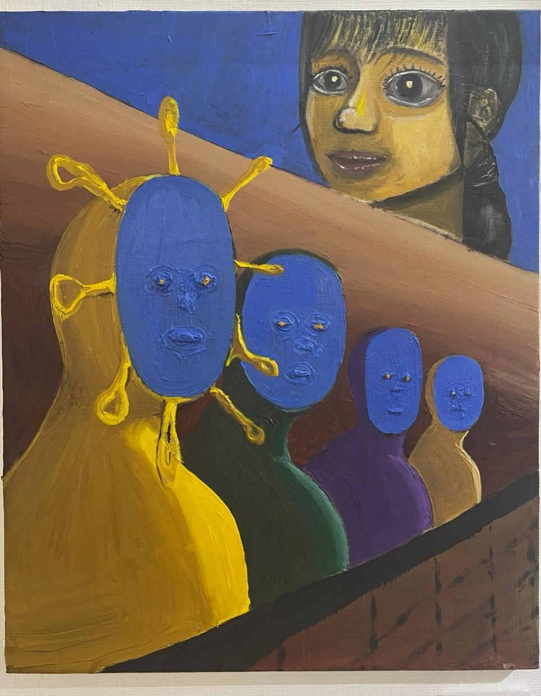
TAKEMURA SOICHIRO
530 × 652 mm / oil on canvas / 2026
VOllSK First exhibition 『面』
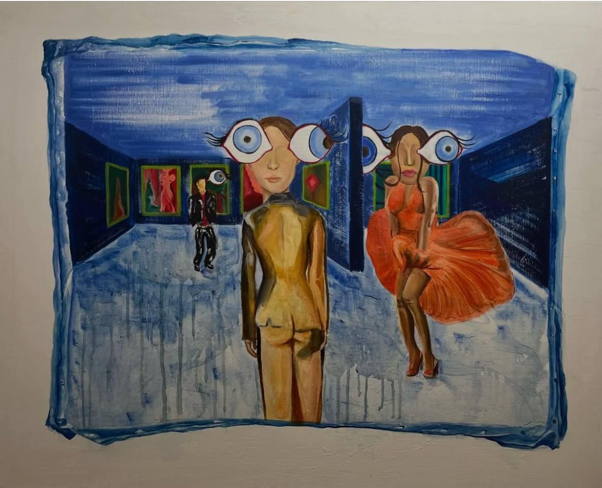
MOCHIDA KOZO
910 × 727 mm / 2026
VOllSK First exhibition 『面』
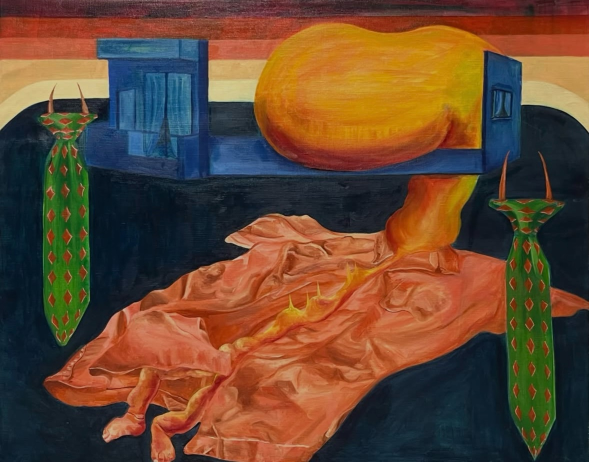
MOCHIDA KOZO
910 × 727 mm / 2026
VOllSK First exhibition 『面』
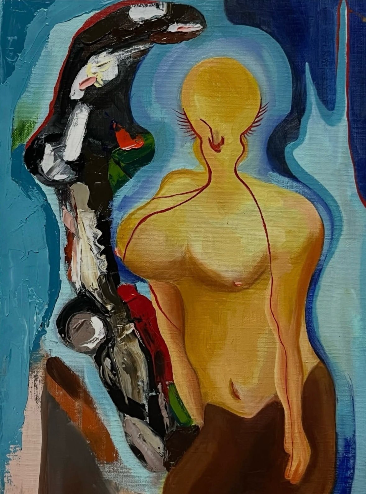
MOCHIDA KOZO
333 × 242 mm / 2026
VOllSK First exhibition 『面』
INFO
EXHIBITION INFO
TITLE
VOllSK FIRST EXHIBITION
-面- -THE FACE-
DATE
2026.08.01 SAT — 08.02 SUN
ARTISTS
MOCHIDA KOZO
TAKEMURA SOICHIRO